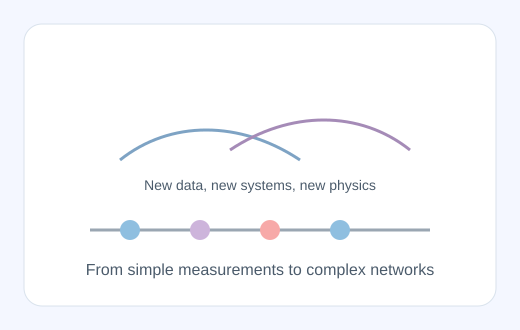
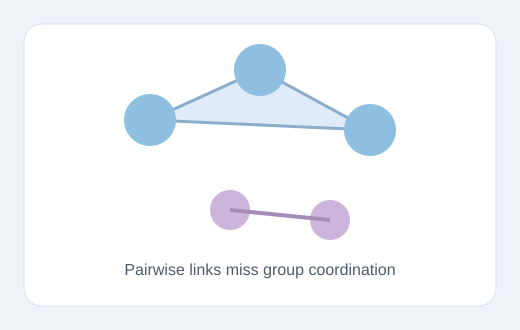
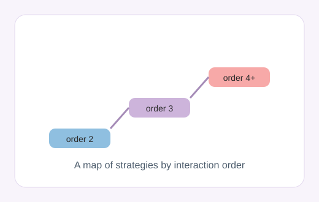

New data, new systems: new physics
A short reflection on the parallels between the early quantum revolution and the present era of data-rich complex systems, with a focus on what this means for AI and new scientific theory.
Views are mine. Here you can read something about them.

A short reflection on the parallels between the early quantum revolution and the present era of data-rich complex systems, with a focus on what this means for AI and new scientific theory.
What am I doing? Here you can read some summaries of recent papers

Our brains do not work as simple pairs of regions talking to each other. This work maps how groups of three or more regions can coordinate together, and shows why these higher-order interactions are essential to capture brain dynamics.

This paper proposes a clear vocabulary for describing how neuroscience studies interactions at different orders, from pairs to groups. The taxonomy helps compare methods and choose the right tool for each scientific question.